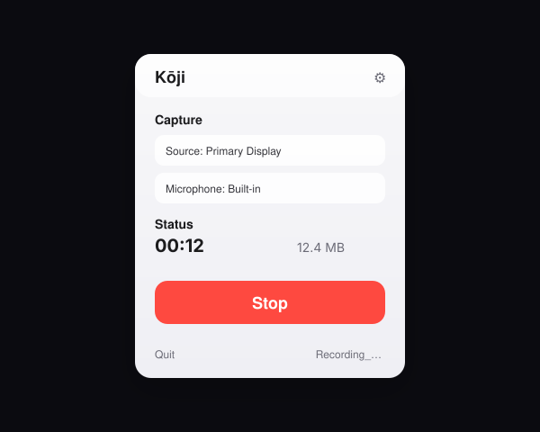

Record your screen. Hear everything. No drivers needed.
Kōji captures your display plus system audio (Zoom, Meet, Spotify) and your microphone — natively via Apple’s ScreenCaptureKit.
Features
System Audio
Captures everything you hear — Zoom, Meet, Spotify — through speakers or Bluetooth headphones.
Microphone
Record your own voice alongside system audio. Toggle on or off.
One Click
Lives in your menu bar. Click to record, click to stop. That’s it.
No Drivers
Uses Apple’s ScreenCaptureKit. No BlackHole. No Loopback. No kernel extensions.
Menu bar popover
Minimal UI, maximum signal
Start/stop, pick a source, and decide whether your mic is included. Designed to stay out of your way.

Installation
- Download the
.dmgfrom GitHub Releases. - Open it and drag Kōji to Applications.
- Launch — grant Screen Recording permission when prompted.
- Click the menu bar icon → Record.